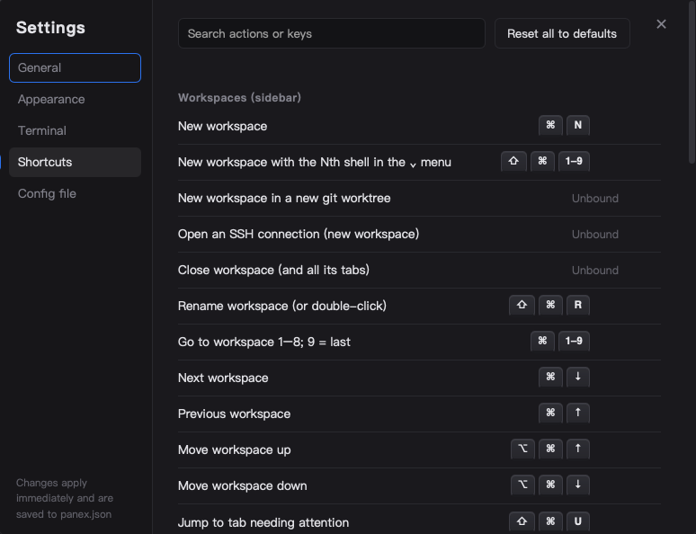

使用指南
panex 的每個功能，依你會遇到的順序說明。在 Mac 上請把 Ctrl 讀成 ⌘、Alt 讀成 ⌥（本頁會自動替你換掉按鍵圖示）。
工作區與分頁
panex 分兩層。側欄列出工作區，一個專案或任務一個；每個工作區上方有自己的一排分頁，每個分頁是一個 shell。
- Ctrl+N 新增工作區，Ctrl+T 在目前工作區新增分頁。新分頁會開在你原本所在的資料夾。
- 改名：Ctrl+Shift+R（工作區）、Ctrl+Alt+R（分頁），或雙擊名稱。右鍵工作區可以設定顏色。
- 拖曳工作區或分頁調整順序。Ctrl+1…9 跳到工作區，Alt+1…9 跳到分頁（9 一律是最後一個）。
- 側欄每一列顯示資料夾、git 分支與狀態。關掉工作區的最後一個分頁會連工作區一起關；關掉最後一個工作區會自動開一個新的。
選擇 shell
Windows 預設是 cmd，有安裝時也能選 Windows PowerShell 與 PowerShell 7：在設定 → 終端機 → 預設 shell 選，或用「新增工作區」旁的 ⌄ 選單。macOS 的分頁啟動你的登入 shell（$SHELL）。
Agent 通知
這就是 panex 存在的理由：知道好幾個 agent 之中，哪一個在等你。
| 狀態 | 你會看到 |
|---|---|
| 工作中 | 工作區顯示轉圈圈與這一輪的經過時間。 |
| 需要你 | 分頁亮藍點，側欄顯示 agent 的訊息（權限確認或提問）。 |
| 完成 | 綠色勾勾與這一輪花了多久。 |
工作區有多個分頁時，顯示其中最緊急的狀態。panex 在背景時另有桌面通知與工作列閃爍；無論如何，分頁與工作區都會亮。Ctrl+Shift+U 直接跳到需要你的分頁。
運作方式
panex 啟動時會把 Notification、Stop、StopFailure、UserPromptSubmit、SessionEnd 這幾個 hooks 加進 ~/.claude/settings.json，各自執行 panex-cli notify 把訊息交給 panex。寫入前會先備份（settings.json.panex-bak），你其他的 hooks 都保留。在 panex 之外這個小程式會立刻結束，所以其他終端機裡的 Claude Code 不受影響。
其他工具
panex-cli notify "建置完成"或讓任何程式印出 bell（\a）、OSC 9、OSC 777 序列。
小隊模式
小隊模式讓一個 agent 在新的 panex 分頁裡啟動其他 agent、等它們做完，再收回成果。你不用打任何指令：在 panex 分頁裡對 Claude Code 說「這件事用三種做法平行試試看」之類的話就行。
- Claude 在自己下方為每個幫手開一個新工作區。開啟 worktree 時，每個幫手各有自己的 git worktree，不會互相覆蓋。
- 幫手跑在你可以打開、觀看、打字的分頁裡。開啟過程是靜默的：你的畫面不會被切走。
- Claude 會等它們。其中一個停下來問問題時，Claude 會告訴你，而不是替你回答。
- 全部做完後，Claude 從 git 收回成果。
背後的兩個指令
# 在新工作區啟動一個指令（可選擇開新 worktree）
panex-cli open --worktree try-a -- claude "做法 A"
# 阻塞等待這些 agent 做完或需要你
panex-cli wait完整說明見 panex-cli help。panex 會安裝一個小小的 Claude Code skill（~/.claude/skills/panex/SKILL.md）教 Claude 怎麼用；在 panex 之外它什麼也不做。
wait 等待期間不耗資源，它依賴 Claude Code 的 hooks，所以只對 Claude Code 有效。還原與接回
關掉 panex、重開機、或從工作管理員強制結束：重開後回到原本的地方。
| 會還原 | 不會 |
|---|---|
| 工作區、分頁、顏色、順序、群組 | 當時正在跑的程式（dev server、建置） |
| 各分頁的 shell 與工作資料夾 | 全螢幕程式（alternate screen）裡的內容 |
| 捲動歷史文字（最後 1000 行） | 當機前最後幾秒（約每 4 秒存一次） |
| 仍在跑 Claude Code 的分頁所屬的對話 |
對 Claude Code，panex 記得每個執行中 session 的 id。重開後打開該分頁，它會自動執行 claude --resume <id>，你就回到原本的對話。已經離開 Claude 的分頁會停在提示字元。可在設定 → 終端機關閉。
還原的分頁要打開才會啟動 shell，所以重開時不會一次啟動所有 shell。
Git 與檔案面板
右側面板，分成兩個分頁。完全唯讀：不會 stage、commit、push 或 fetch。
Git —— Ctrl+Shift+G
- 列出目前分頁 repo 的已暫存、變更、未追蹤檔案，以及最近 30 筆提交，未推送的有標記。
- 點檔案或提交，就在終端機上方看它的 diff。Esc 關閉。
- 側欄每個分支後面有
↑未推送、↓遠端領先（以上次 fetch 為準）、●未提交。哪個 agent 留下了未完成的工作，一眼就看得出來。
檔案 —— Ctrl+Shift+E
- 用資料夾樹顯示整個專案，跟 git 看到的一樣：已追蹤與新增的檔案，扣掉
.gitignore排除的。不在 repo 裡就改掃資料夾（略過隱藏資料夾、node_modules、target）。 - 變更的檔案標與 Git 分頁相同的字母，含有變更的資料夾加一個點，所以不用打開任何東西，就看得出 agent 動了專案的哪一塊。
- 點檔案閱讀：Markdown 排版、程式碼上色加行號（超過 300 KB 不上色）、圖片與 SVG 直接顯示。其他檔案（如 PDF、試算表）提供 Quick Look（macOS）、用預設 App 開啟、在 Finder／檔案總管顯示。
git status，而且只針對你正在看的分頁。git 一律加 --no-optional-locks，不會跟 agent 搶 index 鎖。.. 與指向外面的 symlink 都會被拒絕。Worktree 與群組
git worktree 是同一個 repo 在另一個資料夾的第二份簽出，讓 agent 能在某個分支上工作而不打擾你的。
開一個
- 右鍵工作區 →「用新 worktree 開新工作區…」（或綁定
newWorktree）。 - 輸入分支名；分支與起點兩欄都有本機分支可選。分支已存在就直接簽出，否則從起點建立。
- panex 在 repo 旁邊建立 worktree（
<repo>-worktrees/<分支>），複製worktree.copyFiles列的檔案（預設.env、.env.local，絕不覆蓋），開一個以分支命名的工作區；若設了worktree.setupCommand就自動執行。
.env、node_modules 這類 git 不追蹤的檔案不會自己出現在新的 worktree，這就是需要這兩個設定的原因。
移除
右鍵該工作區 →「關閉工作區並刪除 worktree…」。刪除前 panex 會列出你會損失什麼：未提交的檔案、其他分支與遠端都沒有的 commit、還在工作的 agent。只要有任何一項，按鈕就變成仍要刪除，焦點留在取消。是否一併刪除分支由你決定；分支有獨有 commit 時預設保留。主 checkout 永遠不能這樣刪。
用其他方式刪掉的 worktree（git worktree remove、rm -rf），會在下次 panex 取得焦點或 shell 回到提示字元時自己從側欄消失。
群組
同一個 repo 的簽出會分成一組：主資料夾的工作區在最上面並有收合箭頭，它的 worktree 縮排在下方、標上 worktree。收合時最上面那列顯示組內最緊急的狀態。右鍵可把工作區加入群組、移出、收合或解散。一組至少兩個成員，成員永遠相鄰，所以 Ctrl+數字仍等於畫面由上到下的順序。
搭配 Claude Code 自己的 worktree
Claude Code 開 worktree 時（claude --worktree、EnterWorktree），panex 會把它建在 repo 旁邊，並在該 repo 底下加一個工作區。對話仍留在你開始的那個分頁。Claude 移除它時，panex 會刪掉並關閉那個工作區。可在設定 → 終端機關閉。由於 hooks 是全域的，在 panex 之外的 Claude Code 仍照原本的方式運作。
SSH 連線
- 打開「新增工作區」旁的 ⌄ 選單 →「SSH 連線…」。
- 從
~/.ssh/config選主機（會跟著Include讀、略過萬用字元），或輸入[帳號@]主機[:埠號]。 - 它會開在自己的工作區；在該工作區按＋開的新分頁連同一台主機。
panex 直接跑系統的 ssh，所以金鑰、config、known_hosts、agent 照常沿用。密碼在終端機裡輸入、不會被儲存。連線中斷時會顯示提示，按 Enter 重新連線；重開 panex 也會自動重連。SSH 分頁不記資料夾，因為遠端路徑對本機沒有意義。
快捷鍵
打開設定 → 快捷鍵，點一個快捷鍵、按下新組合即可。一個動作可以綁兩組，可以用連續按鍵（例如 Ctrl+K Ctrl+N），也可以取消綁定讓該按鍵交給終端機。一個組合只能有一個擁有者：原本的會被拿掉，並告訴你是哪一個。

預設值
| 按鍵 | 動作 |
|---|---|
| Ctrl+N | 新增工作區（newWorkspace） |
| Ctrl+T | 新增分頁（newTab） |
| Ctrl+1…9 | 跳到第 1–8 個工作區，9 ＝ 最後一個 |
| Alt+1…9 | 跳到第 1–8 個分頁，9 ＝ 最後一個 |
| Ctrl+PgDn / PgUp | 下一個／上一個工作區 |
| Ctrl+Shift+PgUp / PgDn | 工作區上移／下移（macOS：⌥⌘↑ / ↓） |
| Ctrl+Tab / Ctrl+Shift+Tab | 下一個／上一個分頁 |
| Ctrl+W | 關閉分頁（最後一個會連工作區一起關） |
| Ctrl+Shift+R / Ctrl+Alt+R | 重新命名工作區／分頁 |
| Ctrl+Shift+U | 跳到需要你的分頁 |
| Ctrl+Alt+H | 顯示／隱藏側欄 |
| Ctrl+Shift+G | Git 面板 |
| Ctrl+Shift+E | 專案檔案 |
| Ctrl+Shift+F / K | 搜尋／清除捲動歷史 |
| Ctrl+Enter | 在 Claude Code 裡換行而不送出（macOS：Shift+Enter） |
| Ctrl+= / - / 0 | 字型放大／縮小／重設（或 Ctrl+滾輪） |
| Ctrl+, | 設定 |
設定檔
設定面板（⚙ 或 Ctrl+,）有一般、外觀、終端機、快捷鍵與設定檔幾頁。它寫的是同一個純 JSON 檔 ~/.config/panex/panex.json（Windows 為 %USERPROFILE%\.config\panex\panex.json），你也可以手動編輯。
- 只寫你想改的鍵，其餘用預設值。
- 旁邊放著
panex.schema.json，所以 VS Code 這類編輯器會提供補完與說明。 - 存檔約 0.3 秒後生效。檔案無法解析時，panex 保留最後一份正常的設定，並顯示錯誤與開啟檔案的按鈕。
- 面板擋到想讀的內容時，可以拖曳它側邊的把手移開。
{
"$schema": "./panex.schema.json",
"schemaVersion": 2,
"app": { "opacity": 85, "windowEffect": "acrylic" },
"terminal": { "fontSize": 15, "defaultShell": "powershell" },
"shortcuts": {
"bindings": {
"newTab": [["ctrl+t"], ["ctrl+shift+t"]],
"renameTab": "f2",
"nextWorkspace": ["ctrl+k", "ctrl+n"],
"clearScrollback": null
}
}
}bindings 裡：字串是一組按鍵、字串陣列是連續按鍵、陣列裡放陣列是多組任選一組、null 是取消綁定。所有動作 id 都列在 schema 裡。
終端機小技巧
- 搜尋：Ctrl+Shift+F 搜尋捲動歷史。
- 連結：Ctrl+點擊網址用瀏覽器開啟，或點
src/main.ts:120這種路徑開檔案；在設定 → 終端機選了 VS Code 或 Cursor 就會跳到該行。 - 複製貼上：有選取文字時 Ctrl+C 是複製，否則是中斷；Ctrl+V 貼上。把檔案拖進視窗會貼上路徑（含空格會加雙引號）。
- 字型：可選任何已安裝的等寬字型；中文與 emoji 自動備援，emoji 有顏色。
- 視窗：可調不透明度（文字永遠清楚，只有背景變透明），Windows 11 另有 Mica 與 Acrylic 背景。
- 介面語言：英文或繁體中文，跟隨系統或在設定切換。
- 安全關閉：agent 工作到一半時關閉 panex、分頁或工作區會先詢問（設定 → 終端機）。
- 淡色與斜體文字：Claude Code 的淡色提示以固定灰色顯示、斜體會變直體。這是刻意的：用 GPU 繪圖時，它們背後會多出一塊黑框。
macOS 權限
panex 自己不需要任何權限，但分頁裡的程式在 macOS 看來就是 panex。agent 用 osascript 送按鍵或用 screencapture 截圖時，需要輔助使用或螢幕錄製權限的是 panex。
設定 → 一般 → 權限會顯示哪些已允許，並開啟系統設定對應的頁面。它只在你打開該頁或回到視窗時讀取狀態，不在背景輪詢。每個版本都用同一張憑證簽章，所以授權過的權限在更新後仍然有效。
更新
有新版時，側欄底部會出現一行提示。按更新並重新啟動：panex 下載、驗證、安裝後重新啟動。重新啟動會結束分頁裡的程式（agent 做到一半會先詢問）；工作區、捲動歷史與 Claude Code 對話都會回來。可在設定 → 一般手動檢查，或關閉自動檢查。
還是卡住了？開個 issue，附上你的作業系統版本與使用的 shell。